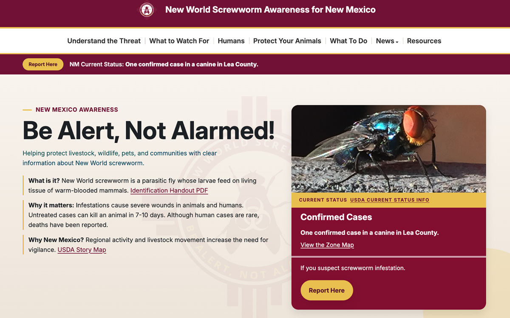

New World Screwworm Awareness
Synthesized technical material from four state agencies (NMDA, NMLB, NMDOH, NMDGF) into one public-health resource. Built the information architecture and accessible Cascade CMS site for distinct audiences — livestock owners, veterinarians, wildlife and healthcare personnel, pet owners, and the general public — informing the public without causing alarm.
Visit screwwormnm.org